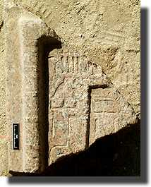
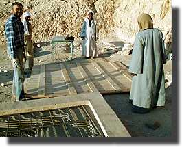
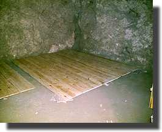

|
|||||||
Saturday 25 DecemberHappy Christmas to our readers. This year for the first time since the 1980s we took Christmas Day off. We have been invited to dinner at Chicago House, and so we planned various errands and shopping around the aim to be there in mid-afternoon. We didn't go visiting the monuments, but we did drop in at the Qurna Inspectorate to offer Christmas wishes to the Director, Mohamed el-Bialey, and his inspectors. Then a wander down to near the Colossi of Memnon where an old friend of ours, Aly Ahmed, has recently opened a handicraft shop. We thought we'd give him some free publicity.
Then down to the ferry and over to Luxor. The roads at the ferry are being rebuilt at present so things are a bit of a mess. It's funny being in Luxor during the working day, as we do not normally go over much before dark. It's noisy and the air is full of petrol fumes; we're glad that we live on the 'other side'.
As well as doing some necessary shopping, we go to the Luxor Museum. The Director, Dr Mohamed Nasr, is looking for objects to put into the new extension to the museum which is being built. He said he might be interested in putting our statue in there, so we want to give him some photos and a description. He wasn't in, but we left it with his assistant. It would be so nice to see it on display, but of course there is much competition, when we all think about how much material has been found in the Theban region. And so to Chicago House. We have been very fortunate to enjoy a great relationship with them for 15 years now, and they are very kind in asking us along for Christmas. It's always a pleasant occasion, meeting friends and colleagues in an informal relaxed atmosphere. Thank you CH!
|
|||||||
Sunday 26 DecemberBack to work today, continuing our first trawl through the objects. We're left now mostly with small and miscellaneous groups, but there is still the granite false door. Despite the fact that we tend to think of granite as very hard, when it gets broken or smashed, it breaks into many very small pieces, which do not leave the sort of breaks which are easily repaired. Thus we did not expect to get any joins, and indeed we do not. But we photograph them like we did the stela, so that we can perhaps produce a montage of some part of the original. After careful examination of the granite fragments, we have found 3 or 4 occurrences of the name of Senneferi. Others have parts of the jambs and panels, as well as the torus moulding and the cornice, and there are many fragments which bear plaster from where it was fitted into the wall of the tomb. There are no fewer than 1800 pieces of granite, and they nearly all come from the fill of Shaft I, which we find rather odd, given that the fill of that shaft is basically the same as that of the courtyard. We have only one large fragment (shown here), but we are not convinced from the type of the granite and from the execution of the hieroglyphs that it does belong with the rest!
By the end of the day we have finished the first inspection of the objects and will move onto more detailed recording tomorrow. |
|||||||
Monday 27 DecemberA surprise awaits us at the tomb. Yesterday, Abdel-Rahman, despite feeling a little unwell with a cold which has been going round his family, came back to the tomb in the afternoon with two shaft covers and a wooden storage box which he has organised for us. It all sits out in the courtyard overnight, and today we have to get it into the tomb. The largest section is only a couple of cm smaller than the doors into the tomb (something we all forgot about when we measured it!). It took four of us to get the larger one into the tomb, with Helen watching to make sure that we did not damage the walls as we did it.
The rest of the day was quiet in comparison. Briant Bohleke of Chicago House kindly offered to come by and help with the hieratic of the various jar labels we have found, particularly those on the Senneferi vessels. Quite a number of them appear to have contained wine (as in the picture below), with others containing various types of seeds. It is really good to be able to draw on the experience of others working in the area, and we eagerly await his conclusions.
|
|||||||
|
All text and images © Nigel Strudwick 1999 |
|||||||
 The Dig Diary 1999--Part 9
The Dig Diary 1999--Part 9© Nigel Strudwick 1997-2016